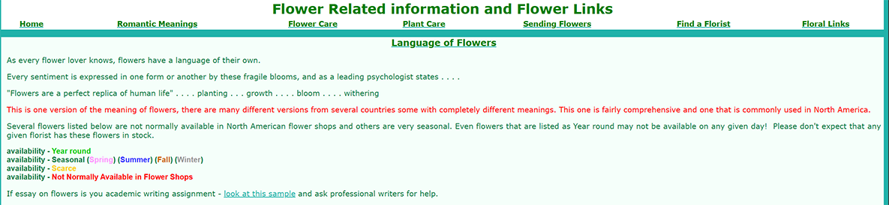
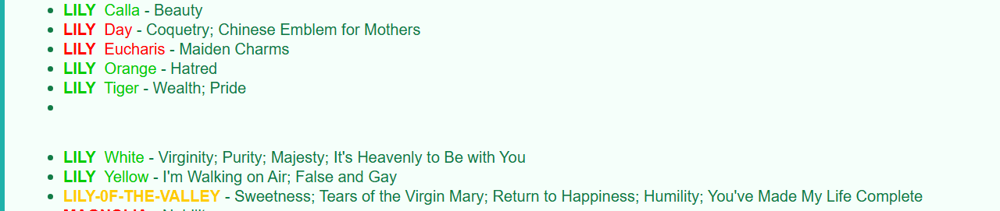
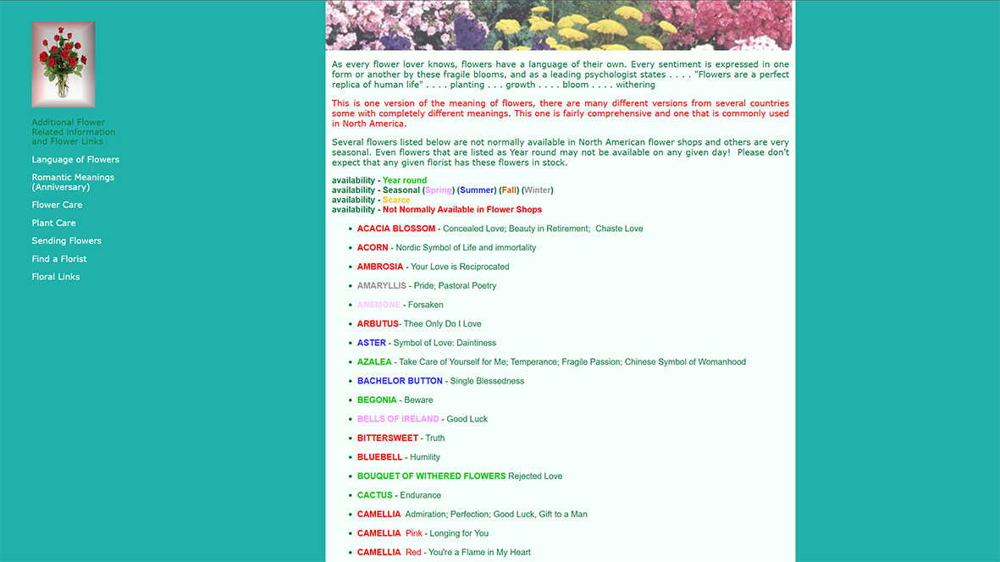
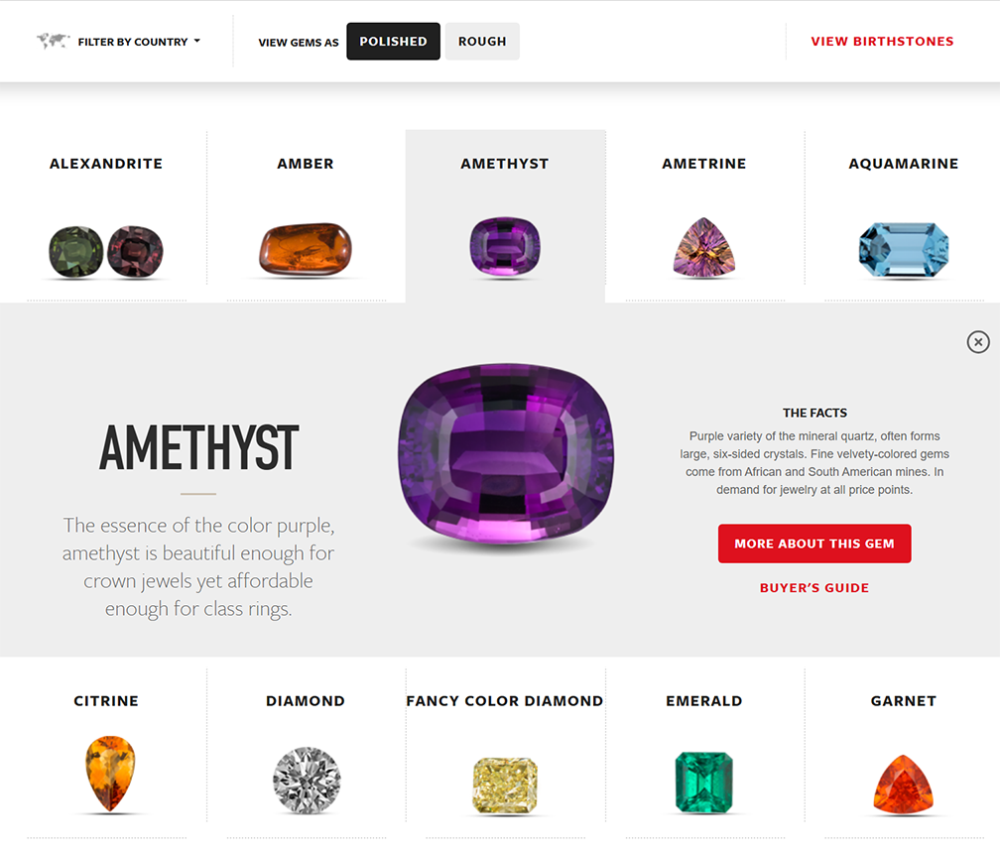
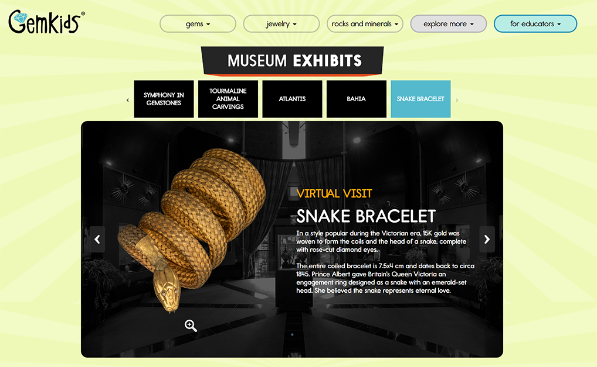

Typography can be a difficult thing. Easy to figure out what does not work, but harder to see what does work. I’ve once again used sites I visit as a hobby. The first is one of the first results I receive when searching for information on the language or symbolism of plants/flowers. Fittingly called Language of Flowers.
It has a very basic typography. I am unable to find an about page, but judging from its aesthetic it would not surprise me if it was a hobbyist site. There is nothing really of note with the font it uses. According to the inspect notes, it uses Verdana, Arial, Helvetica, and sans-serif. The fonts chosen are similar enough, but the subtle differences can be jarring when trying to read the information provided. It is highly unfortunate as it is supposed to provide information, but said information can be hard to parse with this style.
It also appears to have some formatting issues, and with the screenshot provided, a noticeable typo. I can only assume it either has not been updated for a while, or the last update did not go as planned.
Said format also changes completely for no real discernable reason. I can only assume this is the correct format, but the home page, whenever I visit, always appears as it does above. It does still hold the same font problem, however.
When it comes to a site with enjoyable typography, however, I found gia.edu, or the Gemological Institute of America. It is professionally done and has multiple thorough subpages, and even an alternative children’s site with a fitting aesthetic. Unlike the flower’s hobbyist site, the different fonts for GIA are noticeable yet purposeful. Headers are clearly meant to introduce what’s about to be said, and information is in an readable yet pleasing font to let the information go down easily.
The companion children’s site swaps out the sleek fonts for something more whimsical, appealing to the fun part of learning. Everyone clearly knew what they needed and were not shy about it. As far as I can tell, the font in the information blurb is the same, and just uses bolding, colors, and size to give it variety yet consistency. If it is not the same, it is quite similar, giving the same effect.
It is not particularly fair comparing a professional yet nonprofit organization to a hobbyist site that may or may not be abandoned. That said, it does show how far one can take their site with the right aesthetic sensibilities and mission. Both of these sites aim to inform in their respective fields, but it is clear who exceeds in that effort. I can see myself showing off GIA to my nieces for that part of their schooling, but every time I click on the Language of Flowers I try to find alternatives.